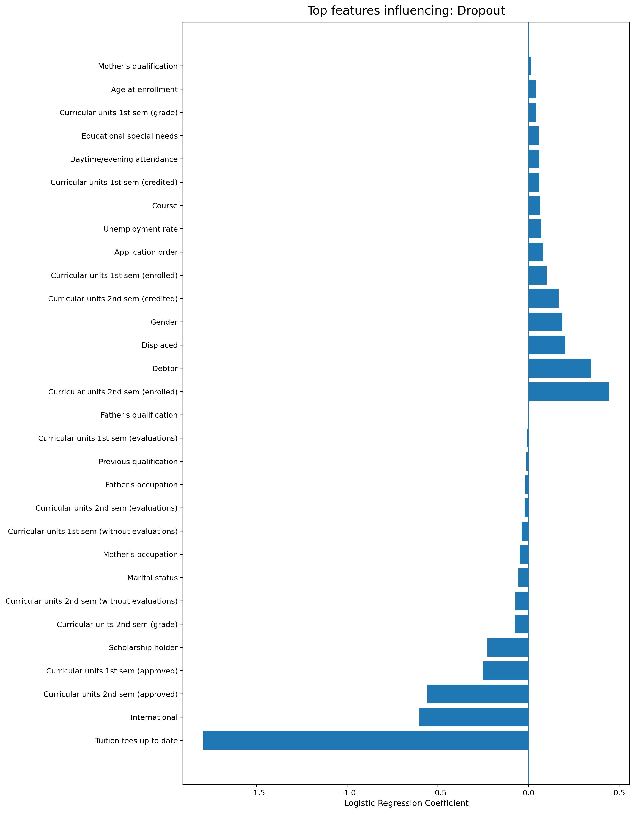
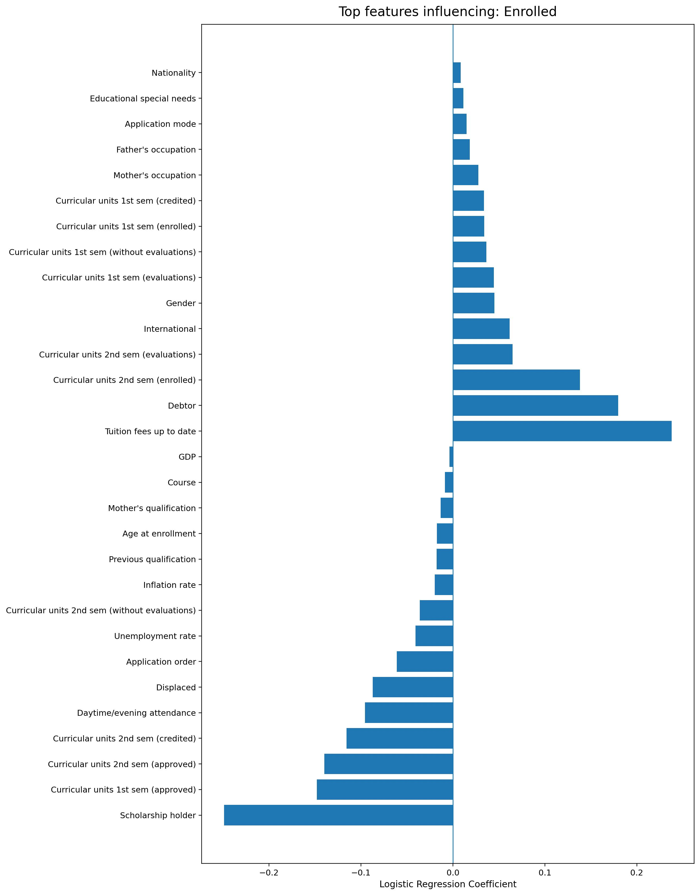
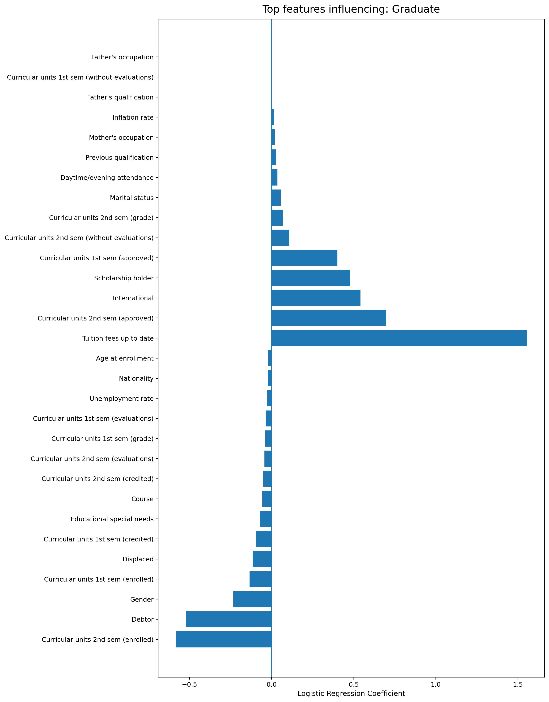

Project Overview
This project predicts student academic outcomes using demographic, academic progress, and financial indicators. The model prioritizes interpretability, enabling clear understanding of how different factors influence predictions.
Predicted outcomes
- Dropout
- Enrolled
- Graduate
Key feature areas
- Financial status (Debtor, Tuition fees up to date, Scholarship holder)
- Academic progress (Curricular units enrolled and approved)
- Demographics (Gender, Marital status)
- Contextual factors (Unemployment rate)
Model Performance
Confusion MatrixConfusion matrix evaluated on a held-out test set.
Scenario-Based Predictions
Interpretability-focusedThese scenario-based predictions illustrate how the trained multiclass logistic regression model responds to different combinations of academic and financial conditions. Predicted probabilities are conditional on all model inputs and represent associations learned from the data rather than causal effects. Consistent with coefficient-based explanations, financial stress indicators produce the largest shifts toward dropout risk, while academic progress primarily differentiates graduation from continued enrollment.
| Scenario | P(Dropout) | P(Enrolled) | P(Graduate) | Most likely outcome |
|---|---|---|---|---|
| Low risk (strong academics, financially stable) | 0.084 | 0.354 | 0.563 | Graduate |
| Financial stress (debtor + tuition not up to date) | 0.653 | 0.315 | 0.032 | Dropout |
| Academic struggle (low approvals / engagement) | 0.116 | 0.499 | 0.385 | Enrolled |
| Mixed signals (scholarship but tuition behind) | 0.558 | 0.310 | 0.132 | Dropout |
Reduced academic engagement alone increases the probability of remaining enrolled rather than graduating; dropout risk rises most sharply when academic difficulties co-occur with financial stress indicators.
Scenario patterns align with the model explanation plots: dropout-skewed scenarios correspond to financial stress drivers, while low-risk scenarios align with academic progress drivers in the graduate explanation.
Outcome Patterns in the Data
Descriptive analysis

Model Explainability
Logistic regression coefficientsDropout
Enrolled
Graduate
Data Source & Attribution
APA citationThe dataset used in this project is adapted from the following peer-reviewed study:
Realinho, V., Machado, J., Baptista, L., & Martins, M. V. (2022). Predicting student dropout and academic success. Education Sciences, 12(4), 276. https://doi.org/10.3390/educsci12040276
Kaggle distributions of this dataset trace back to the above publication. All credit for data collection and study design belongs to the original authors.